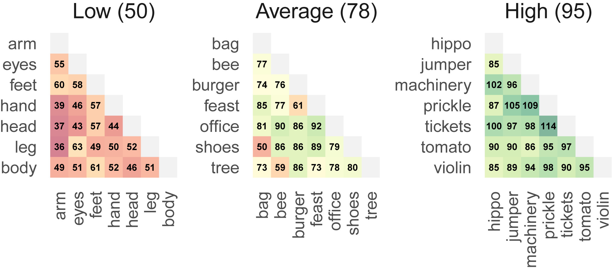

传统测量 被试者创造力 存在耗费时间、主观性太强、缺乏客观性，且所得到的分值是不稳定的，无法跨时间、文化、群体进行分值比较。该研究分析了创新力的两大理论，即联系理论和执行理论，即创新力是包含思维的广度和深度两方面。
- 联系理论(广度) 负责搜寻所有可能方案的集合，增加集合的规模，体现思维的广度。
- 执行理论(深度) 负责寻找最佳方案，并将方案落实执行，体现思维的深度。
结合Glove词嵌入技术，将每个词理解为一个技术或知识，两词语语义越相似，发散性越低。
文中让被试按照一定规则，随意填写10个名词，使用其中7个有效词语测量被试的创新力(发散性)思维。可以简单的把7个词理解为知识或者技术，7个词语会形成21种词语对(组合)。最后求均值可以测量出被试词语对的语义距离体现创新发散性的强度。文末含案例代码
Olson, J.A., Nahas, J., Chmoulevitch, D., Cropper, S.J. and Webb, M.E., 2021. Naming unrelated words predicts creativity. Proceedings of the National Academy of Sciences, 118(25), p.e2022340118.
一、摘要
一些理论认为，有 创造力 的人能够产生更多 发散性 的想法。如果这是正确的，简单地让被试写 N 个不相关的单词，然后测量这N个词的语义距离， 作为 #发散思维 的客观衡量标准。为了验证这一假设，我们要求 8,914 名参与者说出 10 个彼此尽可能不同的单词。
然后计算算法估计单词之间的平均语义距离；相关词（例如 cat 和 dog）比不相关词（例如 cat 和 thimble）的距离更短。我们预测，产生更大语义距离的人也会在传统的创造力测量中得分更高。
在研究 1 中，我们发现语义距离与两个广泛使用的创造力测量（替代用途任务和桥接关联差距任务）之间存在中度至强相关性。在研究 2 中，参与者来自 98 个国家，语义距离仅因基本人口变量而略有不同。在一系列已知可预测创造力的问题上，语义距离与表现之间也存在正相关关系。
总体而言， 语义距离 与已建立的 创造力测量 的相关性至少与这些测量彼此之间的相关性一样强。 因此，在我们所说的发散关联任务中命名不相关的词可以作为发散思维的简短、可靠和客观的衡量标准。
二、创新力理论
想出 3 个尽可能不同的词。根据两种主要的创造力理论 (1, 2)，选择这些词依赖于产生 #远程联想 ，同时抑制 #常见联想 。
#联想理论 (Associative Theory)认为，有创造力的人具有语义记忆结构，可以更容易地链接远程元素 (3-6)。
#执行理论 (Executive Theory) 侧重于自上而下的注意力控制；创造性的解决方案来自于监测和抑制共同的联想 (2, 7)。
基于这些理论，我们假设 填写n个无关单词的任务 可以可靠地衡量 #语言创造力 。 创造力有两个主要的心理成分， 收敛思维和发散思维，它们在产生创意输出时协同工作。收敛性思维任务衡量评估多种刺激并得出最适当响应的能力，例如问题的最佳解决方案 (3, 8-10)。这些任务往往更容易得分，因为只有一小部分正确答案。相比之下，发散思维任务通常使用开放式问题来衡量一个人产生各种解决方案的能力 (11-13)。它们通常需要更长的回答(文本)，因此更难客观评分。
三、创新力测量
3.1 替代用途任务
最常见的发散思维测量是 替代用途任务 Alternative Uses Task (14, 15)，在该任务中，参与者生成常见物体的用途，例如回形针或鞋子。使用常用的评分方法 (16)，评分者然后根据三个组成部分来判断回答：
- 灵活性，产生的不同用途类别的数量；
- 独创性，每次使用相对于样本的其余部分的稀有程度，这对创造力特别重要（17、18）；和
- 流畅度，一共产生了多少次使用。
3.2 离散联系任务
本研究作者开发了 离散联系任务 (Divergent Association Task， DAT) 的网站， 填写你想到的10个不相关词语， 创造力越丰富的人，填写的词语语义距离往往会更远。
https://www.datcreativity.com/
被试填写10个单词的规则
- 只能填写英文单词
- 只能是名词(如事情、物体、概念)
- 不能填 专有名词（例如，特定的人或地点）
- 不能填写 专业词（比如技术词）
- 自己思考这些词，不要只看周围环境的物体。
DAT算法实现
- 使用Glove预训练模型
- 选前7个词(一共10个词)， 存在 21个词对（组合）
- 对21词对， 分别计算词向量的余弦距离，分别乘以100。最终求均值得到DAT得分。
下图是大邓第二次填写得到的DAT得分，第一次只超过了6%的人，这方法第一次准，再测就知道如何提高DAT得分。
DAT得分范围0-200， 得分为0可能是7个有效词之间语义相同，而得分200可能是有效词之间彼此语义完全不相同。实践中，得分大多处于65~90之间，且很少超过100。

词嵌入技术可以把每个词转化为等长的向量，而不同词语共处于相同的语义空间中。常见的词嵌入技术有word2vec、Glove、flastText等，因为最近有学者在 替代用途任务(Alternative Uses Task）中用过Glove算法，本文采用Glove算法。本研究使用的Glove预训练模型来自Common Crawl Corpus项目，该项目拥有数十亿网页文本数据。
为了提供冗余， 只采用 被试者 填写的前7个词作为有效单词(DAT的被试需要填写10个词)。DAT得分是这些词之间的语义距离的平均值，具体计算方法， 7个词两两相关的组合有 42种组合， 选择其中最有可能的 21 个语义组合。
四、实验
这种发散思维的操作化是基于创造力的联想和执行控制理论。 更高的分数将显示出更大的能力来利用更远程的关联 (3-5) 或抑制过度相关的关联 (2, 7)。
在研究 1 中，我们通过将 DAT 与其他两种创造力测量方法进行比较来检验这一假设：替代用途任务 (15) 和桥接关联差距任务 (36)。
在研究 2 中，我们测试了这些分数如何随人口统计而变化，以及它们是否与更大数据集中与发散性思维相关的其他测量值相关 (9, 37)。 这些研究评估了语义距离是否可以作为发散思维的可靠指标。
五、讨论
研究结果表面， 让被试简单的填写10个不想管单词的任务可以作为 测量发散思维 的可靠衡量标准。在研究中， 将这项任务的表现与已有的两种创造力量表做了比较，具有很高的相关性。
总体而言支持了语义发散性，尽管这种联系背后的确切机制尚不清楚，但在创新力最主要的两个理论，即联想理论或执行理论 的联系网络中衡量网络的范围或效率。
DAT算法表现稳定，方差不随人口统计特征变化出现显著性变化（研究2），可以在跨年龄、跨性别的情况下应用。
5.1 DAT的优点
- 操作简单，快捷，客观，节约了大量的人力时间，又能保证客观性。
- 得分绝对，可比较，可以用于测量不同群体(种族、文化、性别、年龄)的创造力得分。
- 对被试友好，一般一两分钟即可完成。
5.2 DAT的不足
- 创造力有发散性和执行力，发散性负责搜选所有方案集合的规模，而执行力是从方案集中选出最优方案并将其执行。DAT测量的仅仅是发散性思维。
- 被试可能通过填写稀奇的词语提高DAT得分。
- 只有短短几分钟，被试可能很难短时间内了解实验规则。
5.3 未来展望
DAT得分取决于Glove模型、语料库(数据集), 更新词模型或语料库，被试的DAT得分会发生变化。为简单起见，本研究使用免费的预训练模型， 通过一些努力，未来研究者可以对不同时期，不同国家的语料库来训练Glove模型。随着特定单词关联或多或少的联系， 更新的模型将会自动考虑这些变化，这将允许DAT得分跨越文化跨越时代，进行创新力的比较。
代码
代码的文档说明请点击 github仓库地址 https://github.com/jayolson/divergent-association-task 查看。这里仅粘贴作者源代码，源代码需要配置好才可运行。
import dat
## 从 https://nlp.stanford.edu/projects/glove/ 下载Glove模型
model = dat.Model("glove.840B.300d.txt", "words.txt")
# 验证词语，如输入的是词组，代码会将其转为连线形式的单词
print(model.validate("cul de sac"))
Run
cul-de-sac
计算两个词语之间的语义距离
print(model.distance("cat", "dog"))
print(model.distance("cat", "thimble"))
Run
0.1983
0.8787
计算词对的DAT得分（语义cosine距离*100）
print(model.dat(["cat", "dog"], 2))
print(model.dat(["cat", "thimble"], 2))
Run
19.83
87.87
假设有三个人分别都填写10个词，选其前7个词作为有效词。有效词如下，
low = ["arm", "eyes", "feet", "hand", "head", "leg", "body"]
average = ["bag", "bee", "burger", "feast", "office", "shoes", "tree"]
high = ["hippo", "jumper", "machinery", "prickle", "tickets", "tomato", "violin"]
# Compute the DAT score (transformed average cosine distance of first 7 valid words)
print(model.dat(low)) # 50
print(model.dat(average)) # 78
print(model.dat(high)) # 95
Run
50
78
95
需要注意pnas作者公开的代码只能用在英文，且无法自己训练Glove模型。如果想基于自有数据集（中文、英文），训练自有Glove模型，需要学习
- 如何训练Glove模型
- 如何导入训练好的Glove模型
- 如何计算中英文dat得分
相关知识点已更新至我的录播课课程 付费视频课 | Python实证指标构建与文本分析